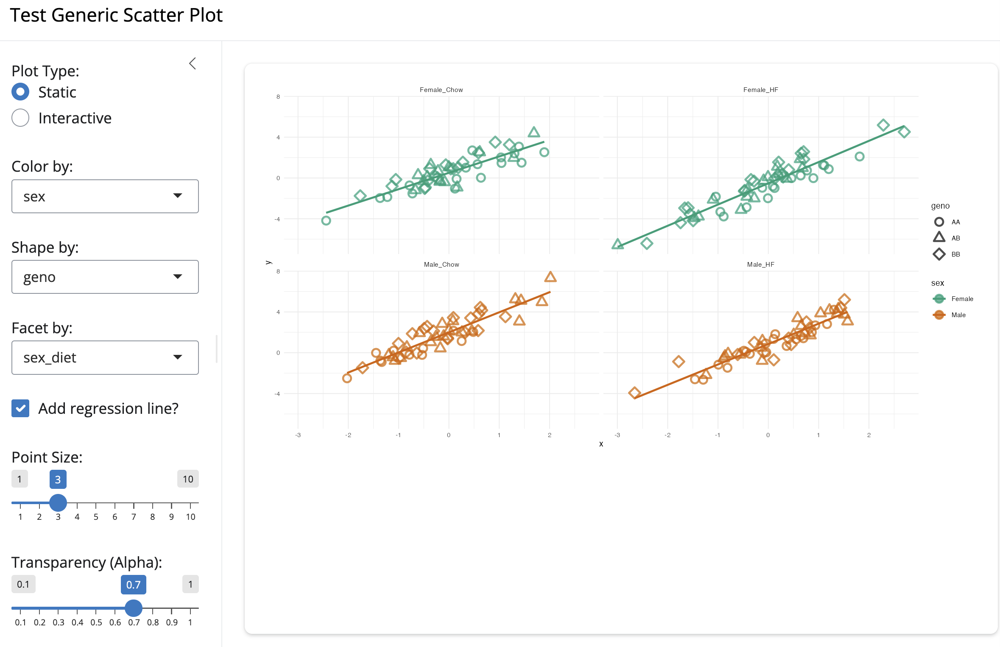

Evolving Data, Statistical Thinking & Data Sovereignty
2026-08-27
Data science approaches vary widely depending on context, discipline, background, goals, and available tools.
byandell.github.ioInsights from personal blog publications on the evolution of data science:
Crucial Distinction
Statistical significance measures whether an observed pattern could occur by chance under a null model. Importance addresses whether a result is meaningful, actionable, and relevant to the domain problem. - Statistical significance does not imply importance. - Importance does not depend solely on statistical significance. - Large sample sizes can produce highly “statistically significant” yet practically trivial effects.
Scatter (X-Y) plots investigate relationships among measurements, augmented with color, symbol shape, trend lines, and facets.

scattyr repo plots in R (ggplot2) and Python (plotnine) with color, symbol shape, and facets to reveal data patterns.
Complex environmental and biological systems present unique analytical challenges:
plotnine in Python.There is an ongoing tension between the open data movement and data sovereignty—the inherent right of Indigenous communities and local groups to govern data collected from their people, lands, and resources.
Key initiatives and frameworks shaping Indigenous data science:
Big data refers to datasets exceeding the processing capacity of traditional database systems and analysis tools.
Platforms and repositories supporting modern data science workflows:
Data Sciences | Documenting Digital Tools